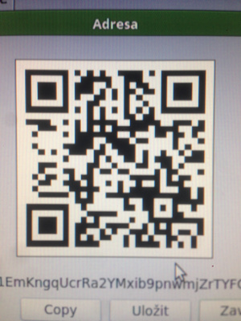
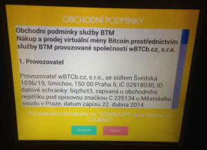

Před pár dny jsem se vydal nakupovat do bitcoinomatu bitcoiny. Většina lidí s tím stále má psychycký problém, proto jsem se rozhodl přidat obrazovou dokumentaci, abych ukázal, že na tom opravdu není nic těžkého.
Předem se omlouvám za nízkou kvalitu fotek. Jednak mi na mobilu odchází kamera (má potíže s ostřením), pak taky pršelo, neočistil jsem čočku a za mnou stáli další dva lidi, co nevypadali úplně nadšeně, že je zdržuju focením. Proto jsem fotil každý krok jen jednou a jak to dopadlo je možné (rozmazaně) vidět.
Ještě před tím, než se pustíme do nakupování je třeba získat někde peněženku, resp. její adresu. Můžete si stáhnout aplikaci na mobil, či do počítače. Pokud používáte iPhone, doporučuji použít aplikaci breadwallet. Na počítači pak jednoznačně Electrum.
(Zde je vidět QR kód mé pěněženky v aplikaci breadwallet.)
Jakmile máte peněženku nainstalovanou, vygenerujte si adresu a převeďte jí na QR kód. Mobilní aplikace to umí samy, Electrum pro to může (ale nemusí) mít zabudovanou podporu. Pokud podporu zabudovanou nemáte, použijte Bitcoin QR Code Generator. QR kód si musíte vzít ssebou, buďto v mobilu, nebo vytsiklý na papíře.

(Co se mě týče, prostě jsem si mobilem vyfotil QR kód zobrazený v Electru. Kvalita nic moc, ale bohatě stačí.)
Poté potřebujete najít nějaký bitcoin bankomat. V Praze jich je hned několik. Jeden je v Brmlabu, další v Paralelním polis. Osobně nejradši používám ten co je ve vestibulu (mapa) Slovanského domu na můstku, protože to mám hned vedle práce.
(Takhle vypadá bitcoinomat. Skoro jak normální bankomat.)
(Jednotlivé komponenty. Tento bitcoinomat je možné použít jak pro nákup, tak i pro prodej bitcoinů.)
(Screensaver s pokyny k použití a kurzem v pravo v rohu.)
(Na výběr máte ze tří možností - Nákup, Prodej a Vybrat hotovost. Prodej trvá nějakou dobu, než ho síť potvrdí, proto je rozdělen ještě do druhého kroku výběru hotovosti.)

(Obchodní podmínky. Standardní záležitost, kde se dozvíte, že nemáte právo prakticky na nic a mezi vedlejší efekty použití může patřit krvácení z očí a konečníku.)
(Teď po vás bitcoinomat chce QR kód s adresou, na kterou poté bitcoiny pošle.)
(Přehledová obrazovka, kde vidíte, kolik už bylo vloženo peněz (v Kč i BTC) a adresu, na kterou budou peníze odeslány.)
(Vstup na peníze. Můžete vložit libovolnou papírovou bankovku. Maximální suma je omezena na 25 tisíc Kč.)
(Já chtěl převést 5 000 Kč. Jakmile s krmením pěnezi skončíte, stiskněte tlačítko Zakoupit bitcoiny, které je možné vidět v pravo dole.)
(Po stisknutí tlačítka vám bitcoinomat zobrazí potvrzení ..)
No a to je všechno. Nyní už jen zbývá potvrdit si, že transakce skutečně přišla. Osobně mi stačí pohled do Electra, všichni ostatní se můžou podívat přímo do blockchainu:
{kind=link}
{kind=link}
{kind=link}
{kind=link}
{kind=link}
{kind=link}
{kind=link}
{kind=link}
{kind=link}
{kind=link}
{kind=link}
{kind=link}
{kind=link}
{kind=link}